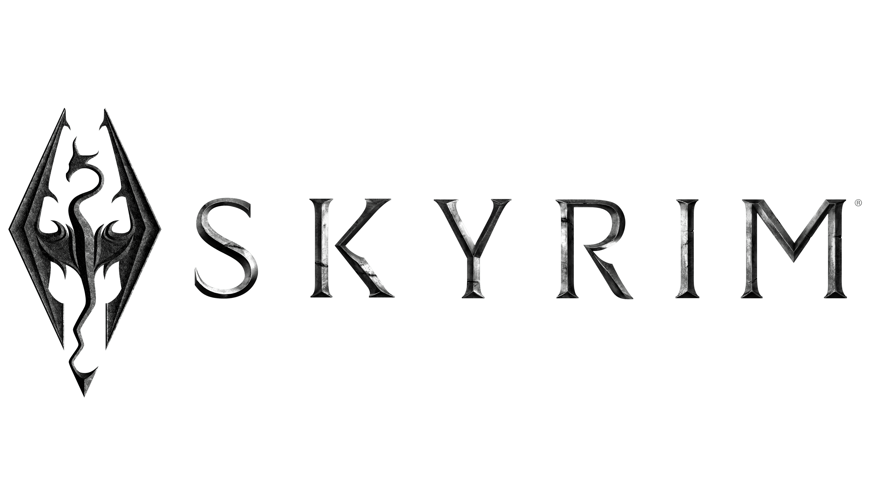
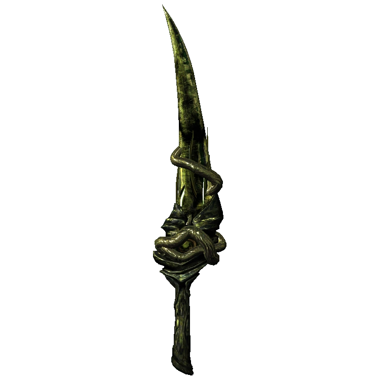
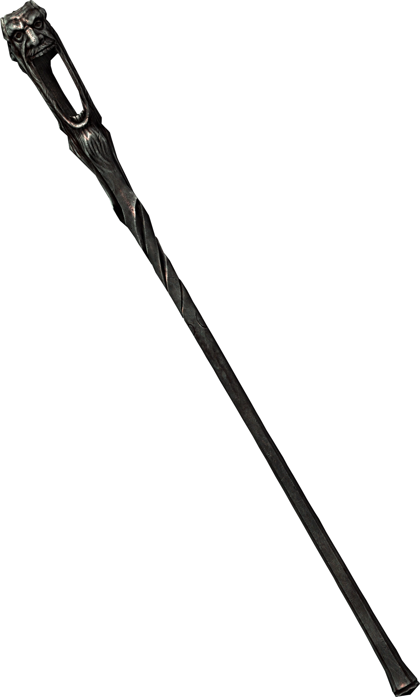
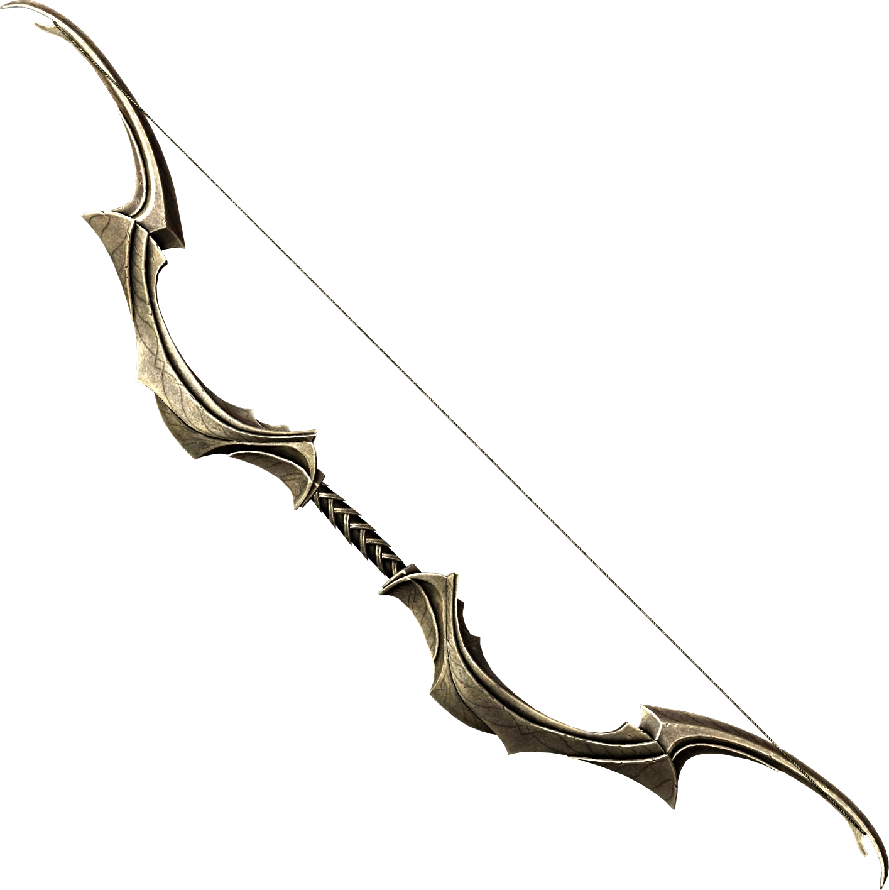
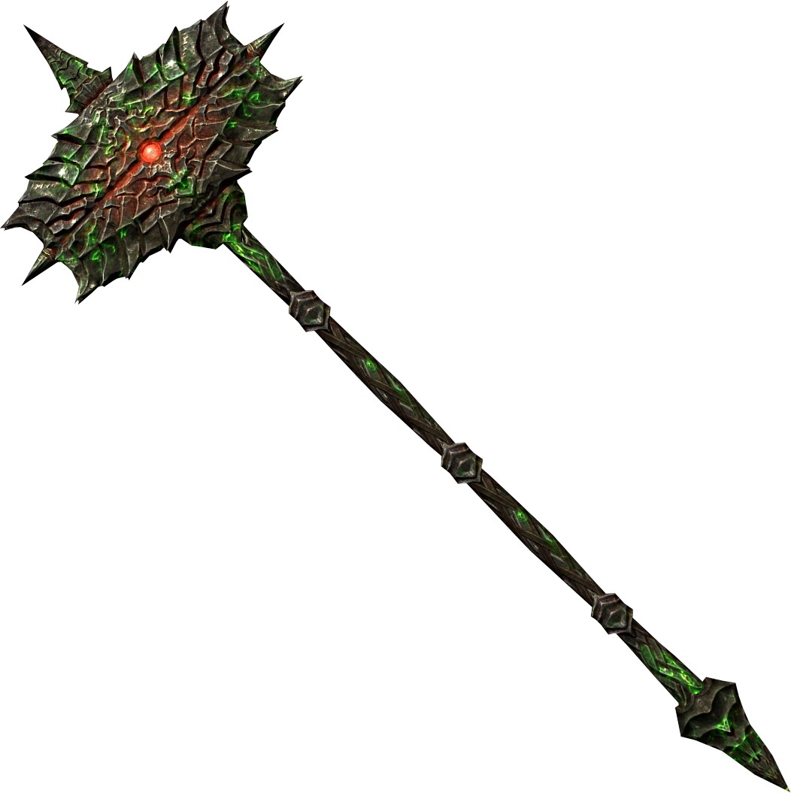
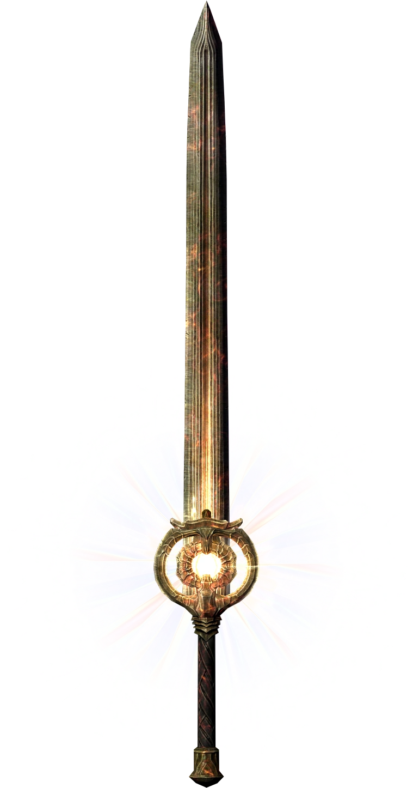
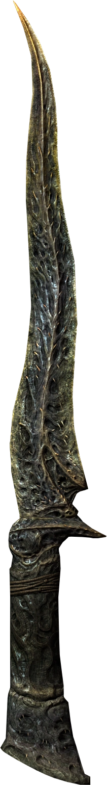

“La espada del primero y más poderoso Sangre de Dragón.”
Forjada en las tierras de Solstheim y envuelta en el poder corrupto de Hermaeus Mora, la Espada de Miraak es un arma única que parece viva. Su hoja tentacular tiene un diseño orgánico que absorbe las almas de los enemigos caídos y asusta a cualquiera que ose desafiar a su portador. Ideal para aquellos que buscan combinar poder con la dominación del plano mortal y daédrico.

“El bastón caótico del Príncipe Daédrico de la Locura, Sheogorath.”
El Wabbajack es el arma definitiva para aquellos que disfrutan del caos y la imprevisibilidad. Cada disparo es una apuesta: un enemigo puede transformarse en un pollo inofensivo, explotar en una nube de fuego, o incluso convertirse en un peligro mayor. Este bastón no solo es un arma, es una experiencia de locura pura. Solo un alma intrépida y con sentido del humor podrá domar su poder.

“El arma divina del dios elfo Auriel, imbuidas con el poder del sol.”
El Arco de Auriel es un artefacto celestial venerado por los altos elfos y los guardianes de la luz. Este arco no solo es una obra maestra en diseño, sino que también posee la capacidad de disparar flechas que canalizan la energía del sol, desatando un poder devastador sobre los enemigos y purificando la oscuridad de Skyrim. Es un arma imprescindible para los héroes que luchan contra las fuerzas de la noche.

“El legendario martillo daédrico, símbolo de los Orcos y la fuerza bruta de Malacath.”
Volendrung es un colosal martillo de guerra que encarna la furia de los orcos y la voluntad del Príncipe Daédrico Malacath. Este arma no solo es imponente en apariencia, sino que también drena la energía vital de tus enemigos para mantener a su portador siempre listo para el combate. Es la elección perfecta para quienes buscan poder abrumador en cada golpe.

“Un arma sagrada de Meridia, diseñada para purgar el mal del mundo.”
Este legendario mandoble brilla con la furia del amanecer, capaz de convertir a los no muertos en cenizas al instante. El Quebrantador de Amaneceres es la elección ideal para los campeones de la luz que buscan erradicar la corrupción de Skyrim. Cuando la luz del sol atraviesa la hoja, incluso los Daedra tiemblan.

“El cuchillo ritual capaz de cortar raíces de Eldergleam.”
Nettlebane es una daga afilada con un filo cruel, forjada por antiguos brujos que buscaban desafiar a la naturaleza misma. Aunque su daño físico es modesto, su habilidad para cortar raíces sagradas la hace invaluable para las misiones que involucran árboles mágicos. Una pieza ideal para aquellos con una pizca de rebeldía en sus corazones.